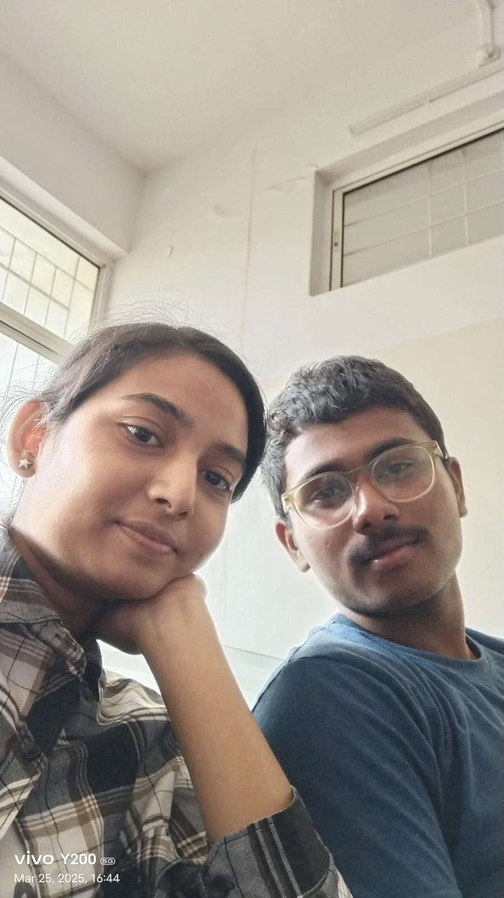
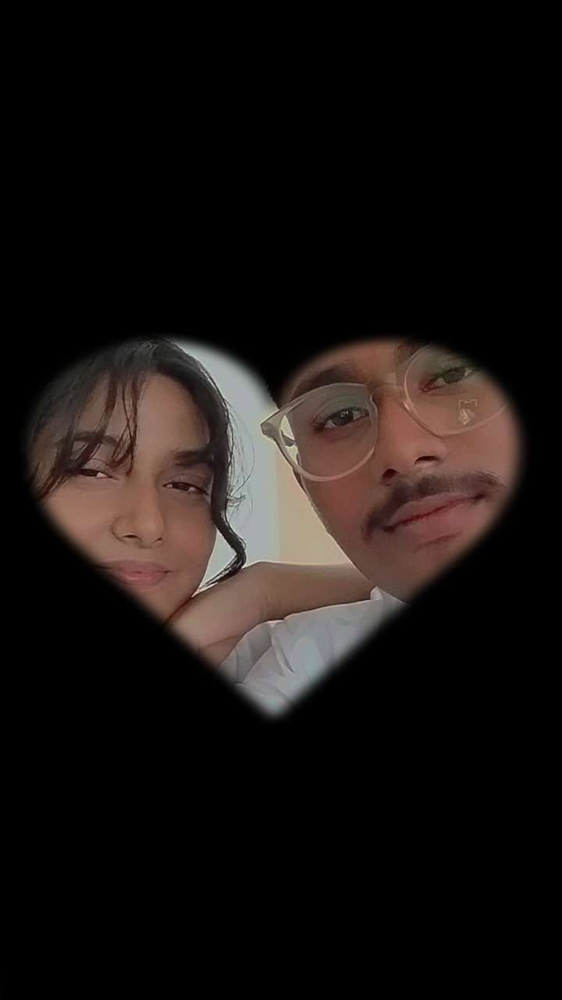
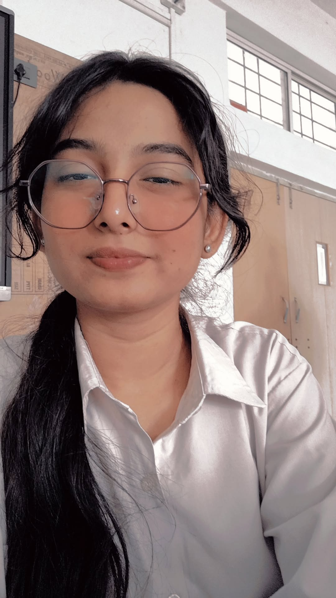
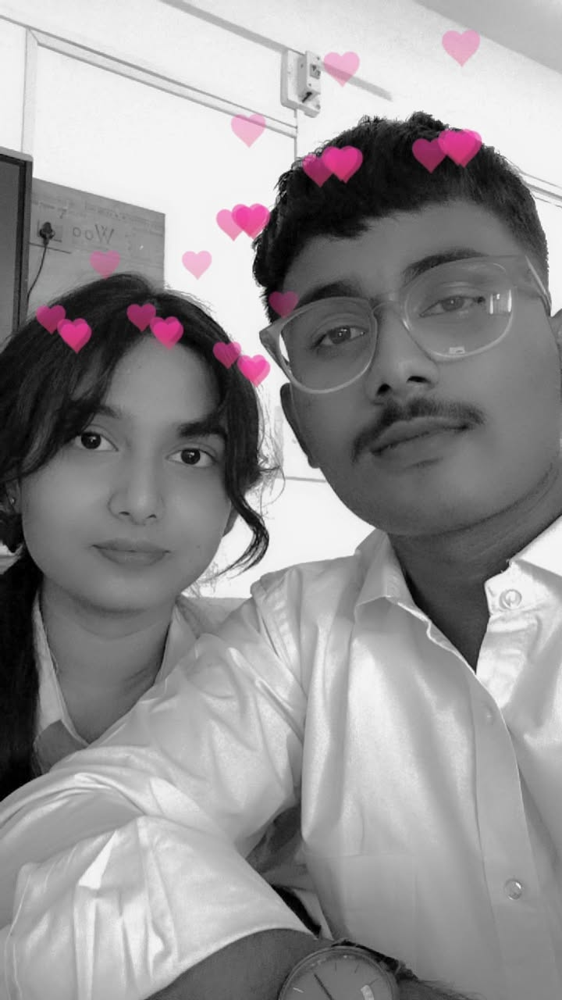

I still remember this day clearly.
You were smiling, and everything felt perfect.
That’s when I realized how special you are to me.

Every moment with you feels different.
Like time slows down just for us.
I wish I could relive this again and again.

You may not notice it,
but I look at you and feel lucky.
Lucky to have you in my life.

And this is just the beginning.
I want many more memories with you.
With you, everything feels right ❤️
Happy Birthday, my love ❤️
I still remember the first time we met in your classroom… just two strangers. But that one eye contact—ufff, something felt different even then.
And then you randomly clicked a selfie of us without even knowing me properly… I didn’t realize it at that time, but that moment became the beginning of something really special.
After that, everything just felt so natural… talking in front of everyone without any shyness, like we already belonged together. And those little things you did—holding my hand so confidently in front of others—it made me feel like I truly mattered to you.
Even playing cricket together in the same team… those moments might seem small, but for me, they mean everything.
And those late-night chats… I still remember one time when that guy was asking you so many things and you were just casually answering 😅 I won’t lie, I felt a little jealous… maybe because I had already started caring about you more than I realized.
There are so many more moments with you… but if I start thinking about them all right now, I’ll probably get too emotional to even finish this message. Just know that every single one of them means the world to me.
Now we may be a little far from each other, but that doesn’t change what I feel. I’ll always try my best for us… slowly, with respect, and one day, with the support of our families too.
From strangers to this beautiful connection… it’s honestly one of the best things that’s ever happened to me. I’m really lucky to have you.
I hope this year brings you all the happiness you deserve… and I promise, we’ll keep creating more beautiful memories together 💖
— Yours
Prem (Gentleman)